Diseñadora gráfica y audiovisual
Melboss Music SL - Madrid
Conceptualización de campañas para la promoción de artistas.
Dic 2025 - Actualidad
Experiencia profesional, trabajo académico, voluntariado y encargos freelance de edición, montaje y producción audiovisual.
Diseñadora gráfica y audiovisual
Melboss Music SL - Madrid
Conceptualización de campañas para la promoción de artistas.
Responsable de edición y montaje
Oniricom Comunicación SL - Madrid
Piezas audiovisuales de patrimonio y cultura.
Coordinadora de Proyectos y Creadora de Contenido
Fundación Inspiring Girls - Panamá
Proyectos enfocados en la inclusión laboral femenina.
Co-fundadora Raval Producciones
Productora audiovisual - Valencia
Edición y montaje, diseño gráfico y estrategia en redes @ravalprod
Edición y montaje
Cortometraje construido a partir de testimonios de vecinos y vecinas del barrio, sobre la transformación que ha sufrido el Cabanyal-Cañamelar y sus consecuencias.
Diseño gráfico y foto fija
Campaña publicitaria "Gente como tú" (spot, cartel y cuña de radio) para Cáritas Interparroquial de Gandía, rodada en su centro de acogida.
Departamento de arte y foto fija
Cortometraje inspirado por el personaje de "Lolita" de Vladimir Nabokov que explora la complejidad de la identidad y el paso del tiempo en la vida de Lolita.
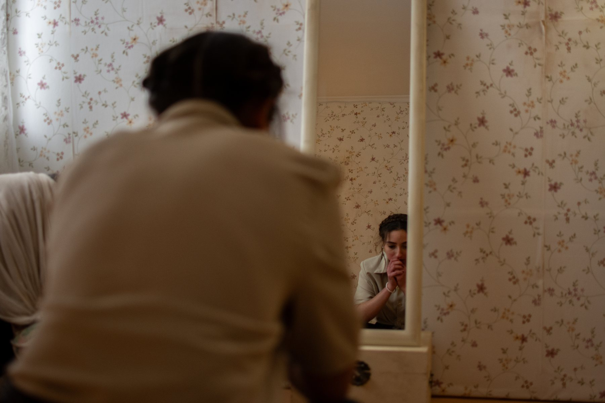
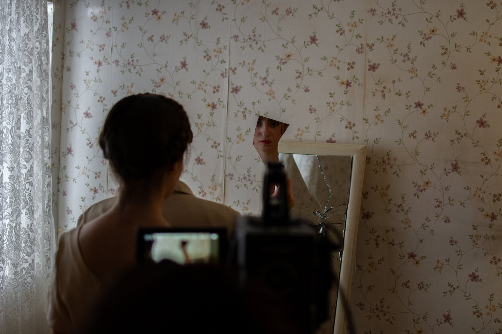
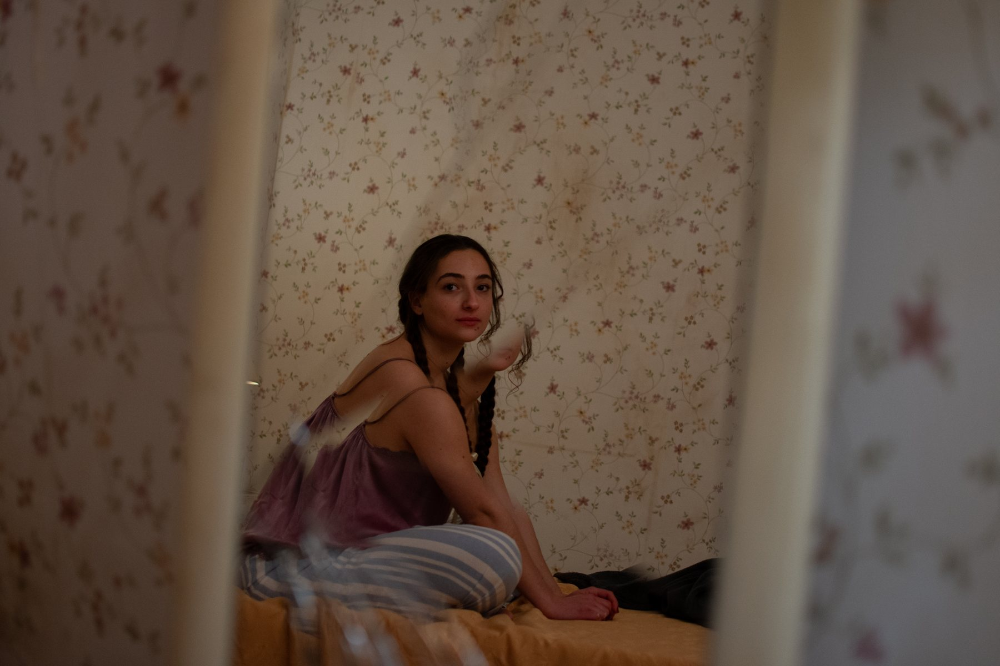
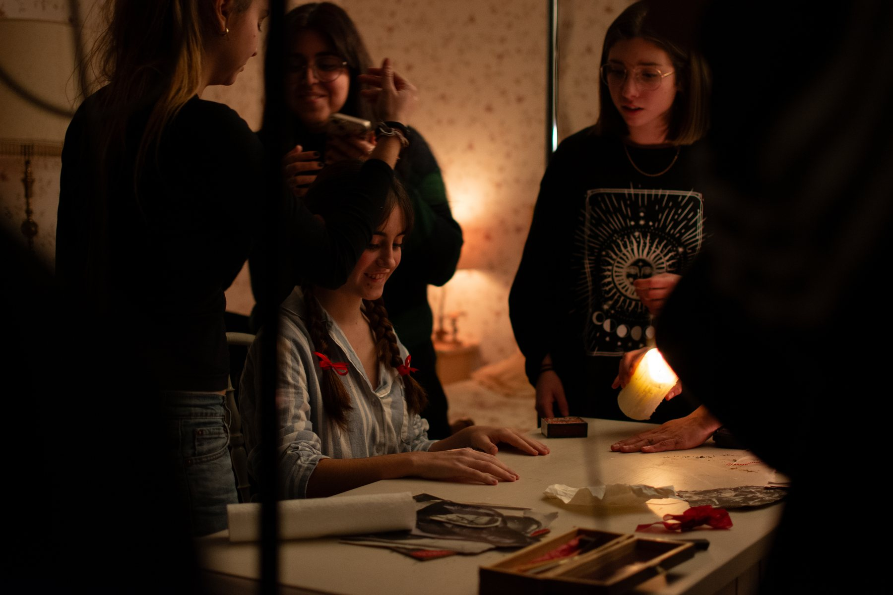
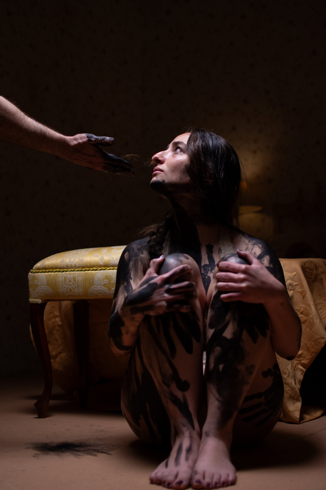
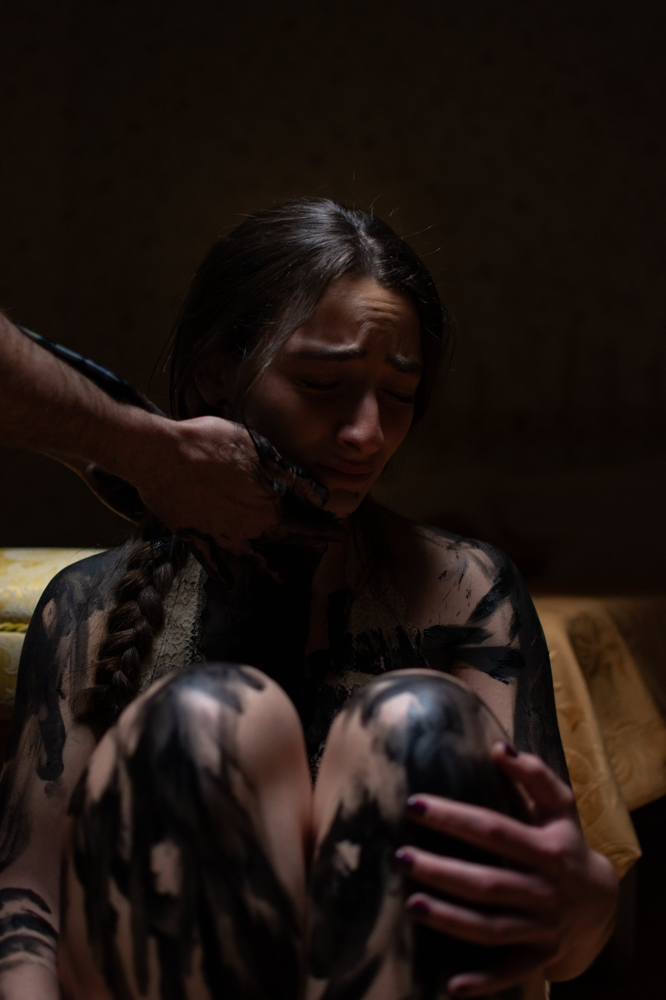
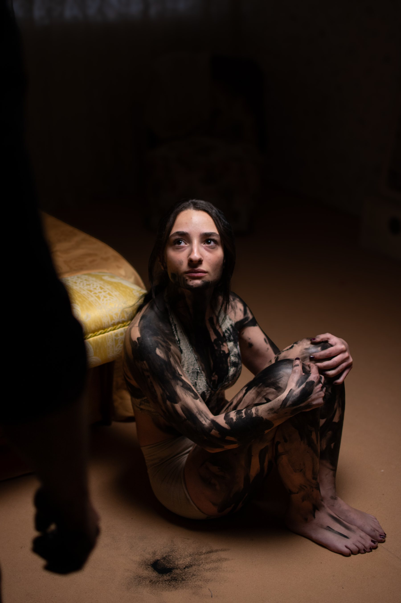
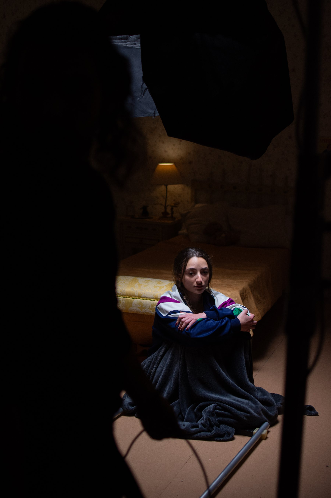
Producción y postproducción individual
Cortometraje rodado en el taller "Filmar el barrio de San Felipe", impartido por la cineasta Nayra Sanz Fuentes en el Centro Cultural de España en Panamá (CCEPA), con el reto de grabar y montar en un solo día una pieza audiovisual que reflejara nuestra mirada sobre la restauración del barrio de San Felipe.
Fundación internacional que conecta a niñas y jóvenes con mujeres profesionales para inspirar sus aspiraciones de futuro.
Coordinadora de proyectos y creadora de contenido
Coordinación de proyectos para acercar a niñas y adolescentes panameñas al sector STEM: talleres de programación y experimentación tecnológica, charlas motivacionales y mentorías con mujeres del sector, además del diseño del contenido audiovisual y gráfico de la iniciativa.
ONG latinoamericana que trabaja para la construcción de viviendas de emergencia y desarrollo comunitario.
Edición y montaje
Teaser para el rebranding de TECHO, editado y montado a partir del material grabado por la organización.
Edición y montaje
Vídeo institucional sobre el patrimonio natural de los Reales Sitios (El Pardo, Aranjuez, El Escorial, La Granja, Riofrío y Campo del Moro): flora, fauna y figuras de protección ambiental como Red Natura 2000 y Patrimonio Mundial de la UNESCO.
Edición y montaje
Vídeo para redes sociales sobre el proyecto europeo de restauración de fondos marinos en la costa catalana.
Edición y montaje
Vídeo de cierre de la primera etapa de esta comunidad de renaturalización urbana, impulsada por la Fundación Biodiversidad.
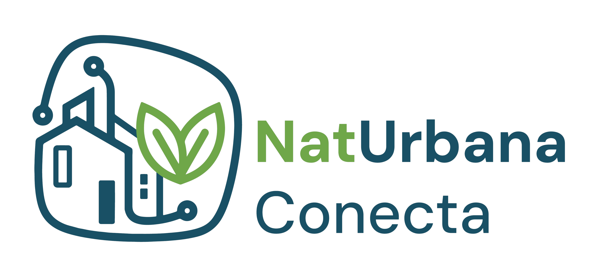
🔒 Vídeo privadoEdición y montaje
Vídeos de formación internos.
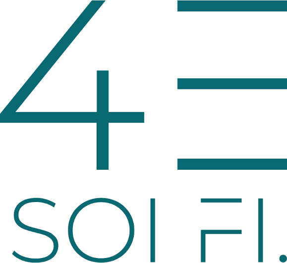
🔒 Vídeo privadoEdición y montaje
Pieza audiovisual actualmente en producción para la Iglesia de Santa Catalina.
Producción
Producción de una pieza audiovisual para una experiencia inmersiva con tres pantallas LED.
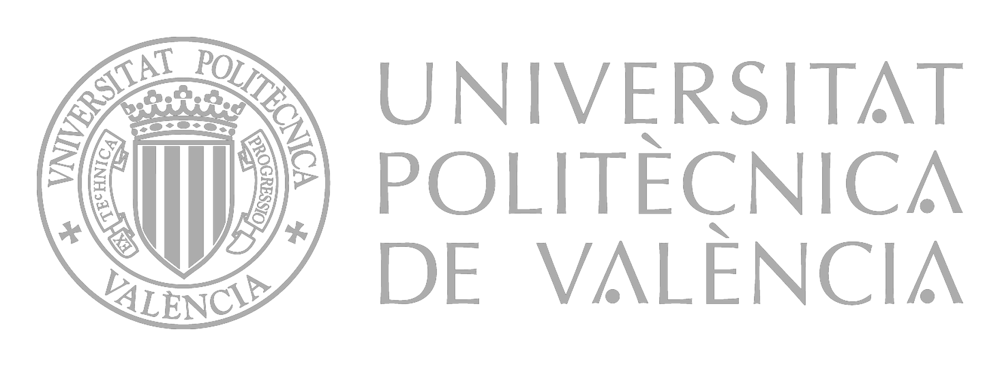
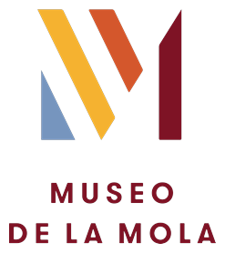
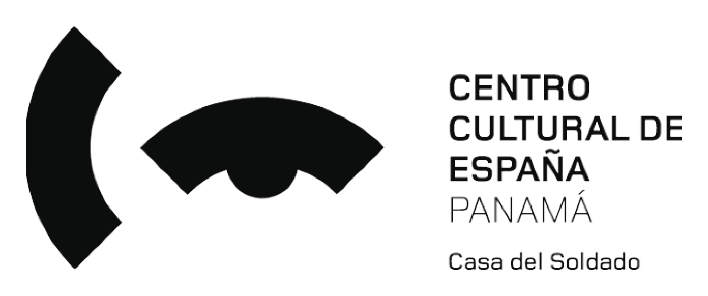
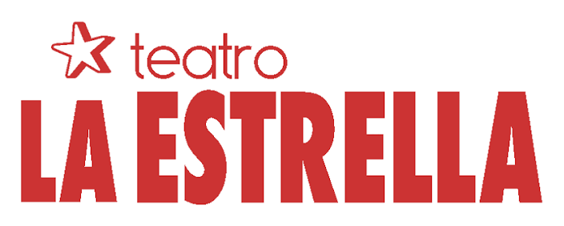
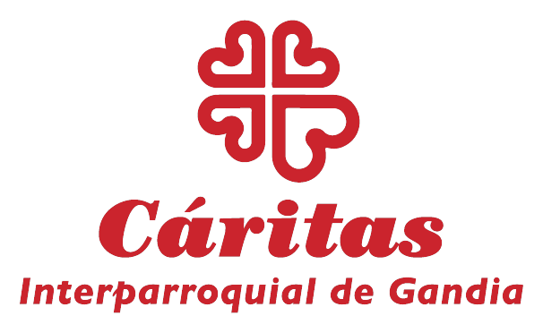
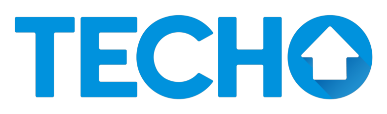
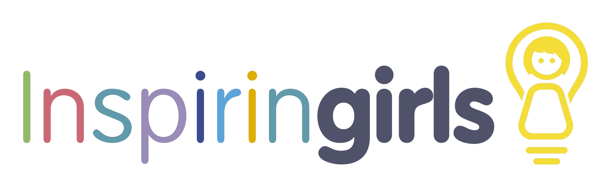
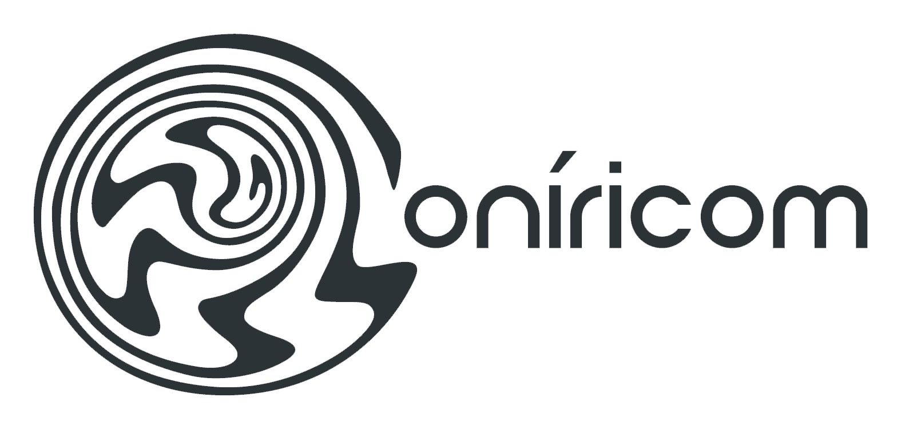
Siempre abierta a nuevos proyectos.